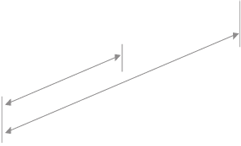

We pride ourselves in delivering clear, direct and precise services for all of our clients. We let the data speak for itself and are experts in providing:
Services
It's all in the details.

Match Previews
Our football analysts are also wonderful writers. Our match previews provide you with plenty of important info, concise summaries and all-round in-depth match analysis - knowledge is key.

Match Analysis
Our professional watchers and soccer analysts work closely together to create incisive match analyses, which are then used to determine a team’s outcome based on our bespoke performance rating system.
Player Performance
We are experts at collecting, collating and compiling sports data. We conduct extensive qualitative and quantitative analysis to review a player’s performance.

ABOUT US
First and foremost, we are mad about soccer.
Not only do we thrive on beautiful footwork and quality goals, but it is our mission to analyse the data in order to predict future outcomes. We simply make it our business to respect the data!
That’s exactly how and why we started Incisive Soccer. We wanted to go beyond the ‘google’ and search method for media coverage and find out what we could actually do with all the data and stats. So we went ahead and began developing analytical models and systems to create remarkably sharp forecasts. Some of our peers call us “brainboxes” - we tend to agree with them.
At Incisive Soccer, we produce in-depth and advanced analysis of a soccer team and player performance through our uniquely developed performance rating system. All spawn from our love of soccer, it’s this stuff that makes us feel all fuzzy and warm inside.
Jobs
Soccer Lovers Wanted
Here at Incisive Soccer, we’re always looking for new talent to join our growing team. We really gravitate towards sharp individuals who feel very passionate about soccer, data and understanding what it all means. We look for people who are motivated and have a great attitude. Excellent academic backgrounds and outstanding quantitative and analytical skills always impress us.
Call us’ football geeks’ or ‘soccer junkies’ - the common thread is our love of the game.
If this sounds like you and you’re interested in hearing about our latest vacancies, please contact us at hr@incisivesoccer.com.
Get in touch
We’re here to answer any questions you may have about us and / or our incisive services. Just email us and we will do our best to get back in touch with you after the match.